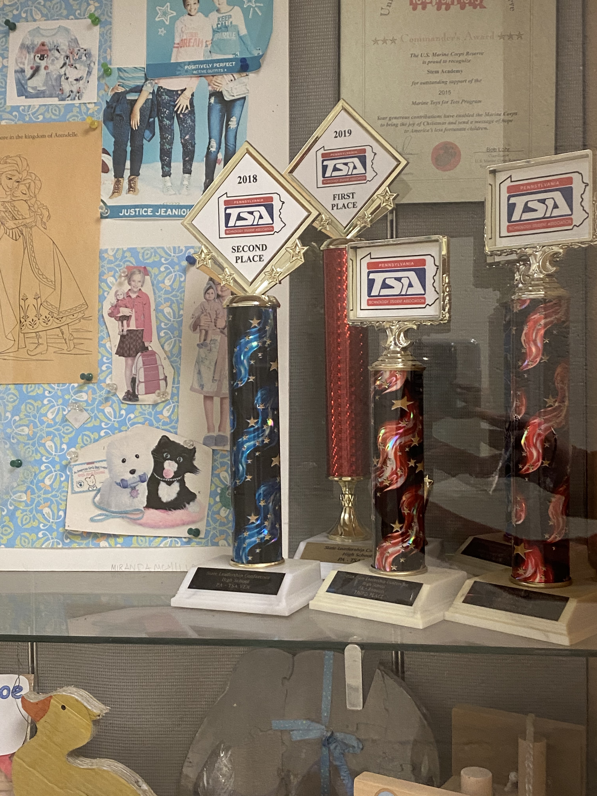

Our Chapter

Downingtown STEM Academy’s TSA chapter consists of 127 active members, who will be participating in at least two Region 5 events this year. Mr. Michael Marron and Ms. Jocelyn Long are the chapter advisors who oversee and organize each students events. They both do a very good job at regulating all events in addition to ensuring organization within our 127 membered chapter. Advisors and all participants meet at least once every month to update each other about the progress of their team. Our student officers also collaborate with our advisors to plan each monthly meeting and communicate with the rest of the chapter.

Though a large chapter, all members of the team were able to choose which events they wanted to compete in thanks to our student officers and chapter advisors. Through these events, students will be able to gain skills and immerse themselves in the STEM fields. Not only does this serve as an excellent learning experience, but it will also enhance leadership skills. All students are very passionate about the events they are competing in and will definitely apply what they gained into the technical world.
This year the chapter plans on fundraising money for the “American Cancer Society”. All members have the opportunity to plan and become involved in these fundraising events. In addition, our chapter allows each member to become involved as leaders through having different committees any student can be a head for, such as T-shirt and fundraising. Downingtown STEM’s TSA chapter aims for their students to challenge themselves and explore activities within the technology and design field.